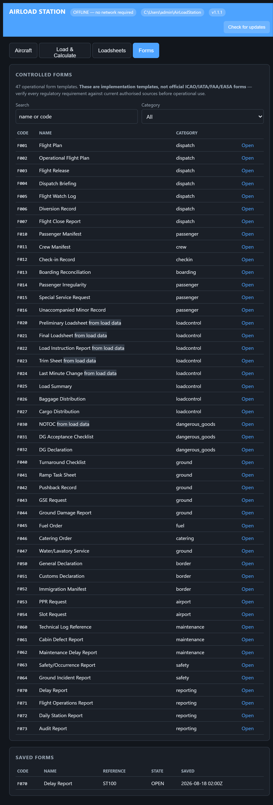
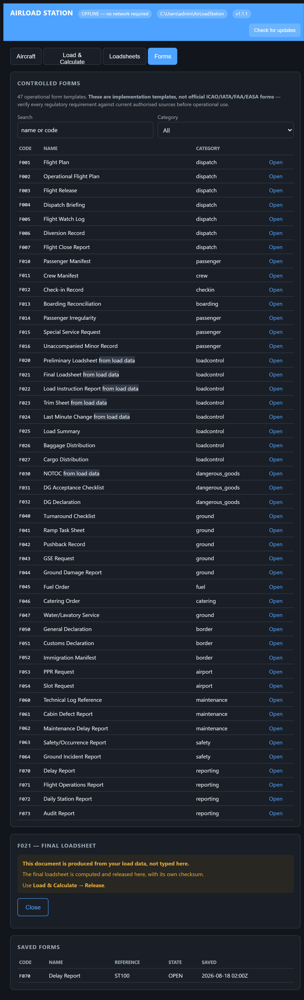

نرمافزار رایگان وزن و تعادل هواپیما و صدور لودشیت
AirLoad Station وزن و تعادل را محاسبه میکند، پاکت مرکز ثقل را رسم میکند و لودشیت IATA AHM 560 صادر میکند — روی یک کامپیوتر ویندوزی، بدون اینترنت، بدون دیتابیس و بدون هزینهی لایسنس.
v1.1.2 · Windows 10/11 · Node.js included

چه کاری انجام میدهد
وزن و تعادل
وزن بدون سوخت، وزن برخاست و فرود، ممانها، ایندکس، درصد MAC و تنظیم تریم، با کنترل در برابر پاکت مرکز ثقل و حدود سازهای.
پاکت CG روی لودشیت چاپی
نقاط ZFW و TOW و LAW داخل پاکت رسم میشوند تا کاپیتان پیش از امضا با یک نگاه بررسی کند.
لودشیت IATA AHM 560
فایل PDF قابل چاپ و پیام Type B مطابق AHM 565.
تعداد مسافر بهجای کیلوگرم
بزرگسال و کودک و نوزاد را وارد کنید؛ وزنهای استاندارد IATA RP 1720 اعمال و محاسبه نمایش داده میشود.
تغییر لحظهی آخر (LMC)
روی لودشیت صادرشده ثبت میشود، تا سقف دستورالعمل شما.
جدول ایندکس سوخت AHM 514
هر مرحله بازوی سوختِ مقدار واقعی روی هواپیما را استفاده میکند.
METAR و TAF
گزارش خام هواشناسی فرودگاه برای بریفینگ، هنگام وجود اتصال.
۴۷ فرم عملیاتی
دیسپچ، خدمات زمینی، کالای خطرناک، مرزی، نگهداری، ایمنی و گزارشگیری.

آنچه عمداً انجام نمیدهد
- با هیچ دادهی هواپیمایی نمیآید. تا تنظیمات AHM 514 خودتان را بارگذاری نکنید هیچ محاسبهای انجام نمیشود.
- لودشیت خارج از پاکت صادر نمیکند و LMC بیش از سقف را رد میکند، نه اینکه هشدار بدهد و اجازه دهد.
- فرمها قالب پیادهسازی هستند، نه اسناد رسمی ICAO/IATA/FAA/EASA.
- وزنهای استاندارد نمونهی تأییدنشدهاند — با جدول تأییدشدهی شرکت خودتان جایگزین کنید.
- فقط روی کامپیوتر خودتان گوش میدهد و هیچ چیزی به جایی فرستاده نمیشود.
نصب
- نصبکننده را دانلود کنید و SHA-256 را با فایل منتشرشده بسنجید.
- اجرا کنید. محیط Node.js همراه بسته است.
- تب Aircraft را باز کنید و تنظیمات AHM 514 را بچسبانید.
AirLoad Pro — سیستم کامل کنترل پرواز
نسخهی رایگان بخش کنترل بارِ AirLoad Pro است؛ یک سیستم کامل کنترل پرواز برای شرکتهای هواپیمایی کوچک.
| AirLoad Station | AirLoad Pro | |
|---|---|---|
| Weight & balance, loadsheet, LMC | ✓ | ✓ |
| CG envelope, trim sheet, Type B | ✓ | ✓ |
| 47 operational forms | ✓ | ✓ |
| Passenger check-in, seat map | — | ✓ |
| Boarding, BCBP boarding passes (Res 792) | — | ✓ |
| Baggage acceptance, bag tags (Res 740) | — | ✓ |
| Air cargo, air waybills (Res 600a) | — | ✓ |
| Dangerous goods, NOTOC | — | ✓ |
| APIS / PNRGOV regulatory filing | — | ✓ |
| Type B messages (LDM, CPM, LIR, BSM, PTM) | — | ✓ |
| Multi-user, roles, audit trail | — | ✓ |
| Multi-airline, multi-station | — | ✓ |
| Mobile surface for gate and ramp | — | ✓ |
| Self-service kiosk | — | ✓ |
خرید AirLoad Pro
برای خرید، درخواست دمو یا پرسش دربارهی راهاندازی بنویسید به
mohammad.ghodrati@gmail.com